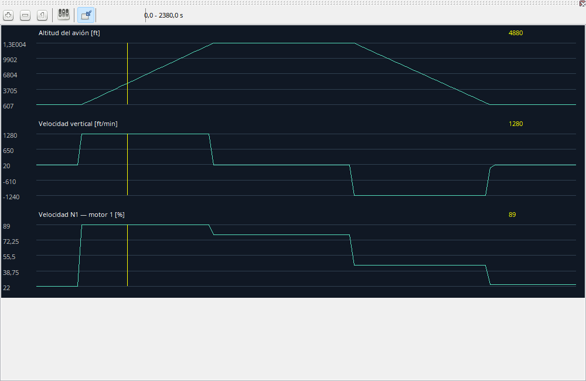

Elija magnitudes apropiadas: IAS, V/S y cabeceo para toma, o N1/EGT/FF para potencia. No muestre todo a la vez. El orden se configura en el diálogo. Las unidades de presentación no modifican medidas originales.
El cursor temporal se sincroniza con el espacio de trabajo.
| Opción / acción | Funcionamiento y limitaciones |
|---|---|
| Selección | Configure parámetros y orden; busque nombres disponibles. |
| Zoom / desplazar | Cambia intervalo, mueve dentro de él; vista completa restaura toda la duración. |
| Cursor | Hover busca tiempo en pausa, no durante reproducción. |
| Unidades / huecos | Presentación no modifica muestras. Etiquetas de interruptores verificadas permanecen del cockpit; desconocidos numéricos. Falta de línea no es cero medido. |
